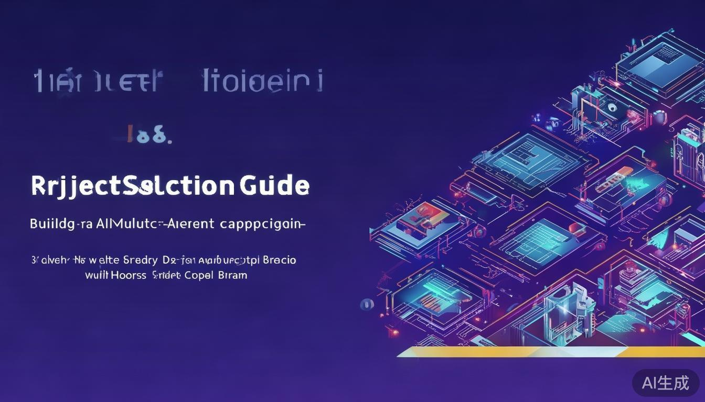
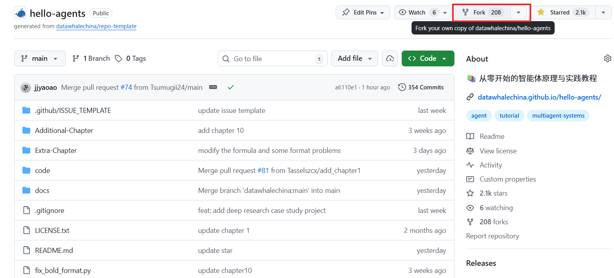
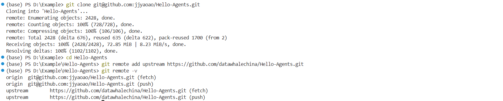
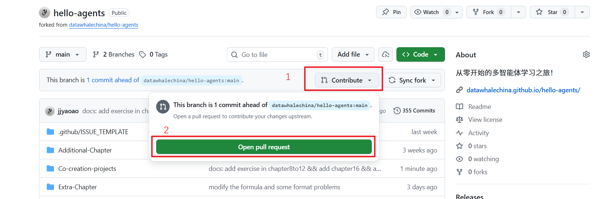
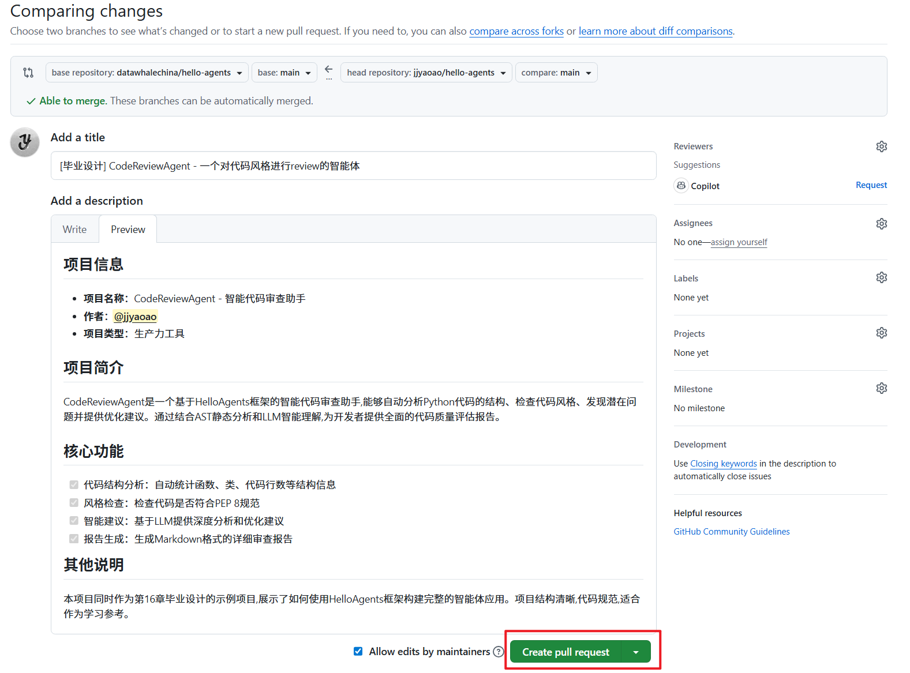

毕业设计：构建属于你的多智能体应用
第十六章 毕业设计：构建属于你的多智能体应用
恭喜你来到 Hello-Agents 教程的最后一章！在前面的 15 章中，我们从零开始构建了 HelloAgents 框架，学习了智能体的核心概念、多种范式、工具系统、记忆机制、通信协议、强化学习训练和性能评估等知识。在第 13-15 章中，我们还通过三个完整的实战项目（智能旅行助手、自动化深度研究智能体、赛博小镇）展示了如何将所学知识融会贯通。
现在，是时候让你成为真正的智能体系统构建者了！本章将指导你构建属于你自己的多智能体应用，并通过开源协作的方式与社区分享你的成果。
16.1 毕业设计的意义
16.1.1 为什么要做毕业设计
学习技术最好的方式不是看教程，而是动手实践。通过前面章节的学习，你已经掌握了构建智能体系统的理论知识和技术工具。但是，真正的挑战在于：如何将这些知识应用到实际问题中？如何设计一个完整的系统？如何处理各种边界情况和异常？
毕业设计的核心价值在于培养你的综合应用能力，将前面学到的所有知识（智能体范式、工具系统、记忆机制、通信协议等）选择性的整合到一个完整的项目中。
通过本章的学习和实践，希望你能够独立设计并实现一个完整的智能体应用，熟练使用 HelloAgents 框架的各种功能，掌握 Git 和 GitHub 的基本操作，学会编写清晰的项目文档，参与开源社区的协作开发，最终获得一个可以展示的技术作品。
16.1.2 毕业设计的形式
你的毕业设计将以开源项目的形式提交到 Hello-Agents 的共创项目仓库（Co-creation-projects目录）。具体要求如下：
- 项目命名：使用`{你的GitHub用户名}-{项目名称}`的格式，例如`jjyaoao-CodeReviewAgent`
- 项目内容：
- 一个可运行的 Jupyter Notebook（.ipynb文件）或 Python 脚本
- 完整的依赖列表（requirements.txt）
- 清晰的 README 文档（README.md）
- 可选：演示视频、截图、数据集等
- 提交方式：通过 GitHub 的 Pull Request（PR）提交
- 评审流程：社区成员会 review 你的代码，提出改进建议，通过后合并到主仓库
16.2 项目选题指南

16.2.1 选题原则
一个好的毕业设计项目应该具有实用性，解决真实的问题而不是为了技术而技术，我们需要追求在有限的时间和资源内可以完成，并且能够清晰地展示你的技术能力。
16.2.2 推荐选题方向
以下是一些推荐的项目方向，你可以选择其中一个，也可以自己提出新的想法：
（1）生产力工具类
- 智能代码审查助手：自动分析代码质量、发现潜在 bug、提出优化建议
- 智能文档生成器：根据代码自动生成 API 文档、用户手册
- 智能会议助手：记录会议内容、生成会议纪要、提取行动项
- 智能邮件助手：自动分类邮件、生成回复草稿、提醒重要事项
（2）学习辅助类
- 智能学习伙伴：根据学习进度推荐学习资源、生成练习题、答疑解惑
- 智能论文助手：帮助查找文献、总结论文、生成引用
- 智能编程导师：提供编程练习、代码 review、学习路径规划
- 智能语言学习助手：提供对话练习、语法纠错、词汇扩展
（3）创意娱乐类
- 智能故事生成器：根据用户输入生成小说、剧本、诗歌
- 智能游戏 NPC：创建有个性的游戏角色，能够与玩家自然对话
- 智能音乐推荐：根据心情、场景推荐音乐，生成播放列表
- 智能菜谱助手：根据食材、口味推荐菜谱，生成购物清单
（4）数据分析类
- 智能数据分析师：自动分析数据、生成可视化图表、撰写分析报告
- 智能股票分析：分析股票数据、新闻舆情，提供投资建议
- 智能舆情监控：监控社交媒体、新闻网站，分析舆情趋势
- 智能竞品分析：收集竞品信息、对比分析、生成报告
（5）生活服务类
- 智能健康助手：记录健康数据、提供健康建议、制定运动计划
- 智能理财助手：记录收支、分析消费习惯、提供理财建议
- 智能购物助手：比价、推荐商品、生成购物清单
- 智能家居控制：通过自然语言控制智能家居设备
16.2.3 选题示例
让我们通过一个具体的例子来说明如何选题和设计项目。
项目名称：智能代码审查助手（CodeReviewAgent）
问题分析：代码审查是软件开发中的重要环节，但人工审查耗时且容易遗漏问题。现有的静态分析工具只能发现语法错误，无法理解代码逻辑，因此需要一个能够理解代码语义、提供深度分析的智能助手。
核心功能：该项目将实现代码质量分析（检查代码风格、命名规范、注释完整性）、潜在 bug 检测（发现逻辑错误、边界条件问题、资源泄漏）、性能优化建议（识别性能瓶颈、提出优化方案）、安全漏洞扫描（检测 SQL 注入、XSS 等安全问题）以及最佳实践推荐（根据语言特性和设计模式提出改进建议）。
预期成果：最终将交付一个可运行的 Jupyter Notebook 展示完整的审查流程，支持 Python、JavaScript 等主流语言，能够生成结构化的 Markdown 格式审查报告，并提供具体的代码示例和改进建议。
16.3 开发环境准备
16.3.1 安装必要工具
在开始开发之前，请确保你的开发环境已经安装了以下工具：
（1）Python 环境
# 安装HelloAgents
pip install "hello-agents[all]"
（2）Git 和 GitHub
# 检查Git版本
git --version
# 配置Git用户信息
git config --global user.name "你的名字"
git config --global user.email "你的邮箱"
# 配置GitHub SSH密钥（推荐）
# 1. 生成SSH密钥
ssh-keygen -t ed25519 -C "你的邮箱"
# 2. 将公钥添加到GitHub
# 复制 ~/.ssh/id_ed25519.pub 的内容
# 在GitHub Settings > SSH and GPG keys 中添加
# 3. 测试连接
ssh -T git@github.com
（3）Jupyter Notebook
# 安装Jupyter
pip install jupyter notebook
# 或者使用JupyterLab（推荐）
pip install jupyterlab
# 启动Jupyter
jupyter lab
16.3.2 Fork 项目仓库
步骤 1：Fork 仓库
- 访问 Hello-Agents 仓库：https://github.com/datawhalechina/hello-agents
- 点击右上角的"Fork"按钮，如图 16.1 红色方框位置
- 选择你的 GitHub 账号，创建 Fork

图 16.1 Fork 仓库步骤
步骤 2：克隆到本地
# 如图16.2所示，克隆你Fork的仓库
git clone git@github.com:你的用户名/hello-agents.git
# 进入项目目录
cd Hello-Agents
# 添加上游仓库（用于同步更新）
git remote add upstream https://github.com/datawhalechina/hello-agents.git
# 查看远程仓库
git remote -v

图 16.2 克隆仓库到本地
步骤 3：创建开发分支
# 创建并切换到新分支
git checkout -b feature/你的项目名称
# 例如:
git checkout -b feature/code-review-agent
16.3.3 项目目录结构
在Co-creation-projects目录下创建你的项目文件夹：
# 进入共创项目目录
cd Co-creation-projects
# 创建项目文件夹（格式:GitHub用户名-项目名称）
mkdir 你的用户名-项目名称
# 例如:
mkdir jjyaoao-CodeReviewAgent
# 进入项目目录
cd jjyaoao-CodeReviewAgent
推荐的项目结构：
jjyaoao-CodeReviewAgent/
├── README.md # 项目说明文档
├── requirements.txt # Python依赖列表
├── main.ipynb # 主要的Jupyter Notebook
├── data/ # 数据文件（可选）
│ ├── sample_code.py
│ └── test_cases.json
├── outputs/ # 输出结果（可选）
│ ├── review_report.md
│ └── screenshots/
├── src/ # 源代码（可选，如果代码较多）
│ ├── agents/
│ ├── tools/
│ └── utils/
└──
16.4 项目开发指南
16.4.1 编写 README 文档
README 是项目的门面，一个好的 README 应该包含以下内容：
# 项目名称
> 一句话描述你的项目
## 项目简介
详细介绍你的项目:
- 解决什么问题？
- 有什么特色功能？
- 适用于什么场景？
## 核心功能
- [ ] 功能1:描述
- [ ] 功能2:描述
- [ ] 功能3:描述
## 技术栈
- HelloAgents框架
- 使用的智能体范式（如ReAct、Plan-and-Solve等）
- 使用的工具和API
- 其他依赖库
## 快速开始
### 环境要求
- Python 3.10+
- 其他要求
### 安装依赖
pip install -r requirements.txt
### 配置API密钥
# 创建.env文件
cp .env.example .env
# 编辑.env文件，填入你的API密钥
### 运行项目
# 启动Jupyter Notebook
jupyter lab
# 打开main.ipynb并运行
## 使用示例
展示如何使用你的项目，最好包含代码示例和运行结果。
## 项目亮点
- 亮点1:说明
- 亮点2:说明
- 亮点3:说明
## 性能评估
如果有评估结果，展示在这里:
- 准确率:XX%
- 响应时间:XX秒
- 其他指标
## 未来计划
- [ ] 待实现的功能1
- [ ] 待实现的功能2
- [ ] 待优化的部分
## 贡献指南
欢迎提出Issue和Pull Request！
## 许可证
MIT License
## 作者
- GitHub: [@你的用户名](https://github.com/你的用户名)
- Email: 你的邮箱（可选）
## 致谢
感谢Datawhale社区和Hello-Agents项目！
16.4.2 编写 requirements.txt
列出项目所需的所有 Python 依赖：
# 核心依赖
hello-agents[all]>=0.2.7
# 可视化（如果需要）
matplotlib>=3.7.0
plotly>=5.14.0
# Web框架（如果需要）
fastapi>=0.109.0
uvicorn>=0.27.0
16.4.3 开发 Jupyter Notebook
（1）Notebook 结构建议
一个好的 Jupyter Notebook 应该包含以下部分：
# ========================================
# 第1部分:项目介绍
# ========================================
"""
# 项目名称
## 项目简介
简要介绍项目的目标和功能
## 作者信息
- 姓名:XXX
- GitHub:@XXX
- 日期:2025-XX-XX
"""
# ========================================
# 第2部分:环境配置
# ========================================
# 安装依赖
!pip install -q hello-agents[all]
# 导入必要的库
from hello_agents import SimpleAgent, HelloAgentsLLM
from hello_agents.tools import BaseTool
import os
from dotenv import load_dotenv
# 加载环境变量
load_dotenv()
# ========================================
# 第3部分:工具定义
# ========================================
class CustomTool(BaseTool):
"""自定义工具类"""
name = "tool_name"
description = "工具描述"
def run(self, query: str) -> str:
"""工具执行逻辑"""
# 实现你的工具逻辑
return "结果"
# ========================================
# 第4部分:智能体构建
# ========================================
# 创建LLM
llm = HelloAgentsLLM()
# 创建智能体
agent = SimpleAgent(
name="智能体名称",
llm=llm,
system_prompt="系统提示词"
)
# 添加工具
agent.add_tool(CustomTool())
# ========================================
# 第5部分:功能演示
# ========================================
# 示例1:基础功能
print("=== 示例1:基础功能 ===")
result = agent.run("用户输入")
print(result)
# 示例2:复杂场景
print("\n=== 示例2:复杂场景 ===")
result = agent.run("复杂的用户输入")
print(result)
# ========================================
# 第6部分:性能评估（可选）
# ========================================
# 评估代码
# ...
# ========================================
# 第7部分:总结与展望
# ========================================
"""
## 项目总结
### 实现的功能
- 功能1
- 功能2
### 遇到的挑战
- 挑战1及解决方案
- 挑战2及解决方案
### 未来改进方向
- 改进1
- 改进2
"""
16.4.4 测试你的项目
在提交之前，可以使用测试清单来判断自己的项目是否满足提交要求：
- [ ] 代码能够正常运行，没有报错
- [ ] README文档完整，说明清晰
- [ ] requirements.txt包含所有依赖
- [ ] 有清晰的使用示例
- [ ] 代码有适当的注释
- [ ] 输出结果符合预期
- [ ] 处理了常见的异常情况
- [ ] 项目结构清晰，文件命名规范
- [ ] 大文件已妥善处理（见下节）
16.4.5 大文件处理指南
重要：避免主仓库过大
为了保持 Hello-Agents 主仓库的轻量化，请遵循以下大文件处理规范：
（1）文件大小限制
- 项目总大小： 不超过 5MB
- 禁止直接提交： 视频文件、大型数据集、模型文件
（2）大文件处理方案
如果你的项目包含大文件（数据集、视频、模型等），请使用以下方案：
方案 1：使用外部链接（推荐）
将大文件上传到外部平台，在 README 中提供下载链接：
## 数据集
本项目使用的数据集较大，请从以下链接下载:
- 数据集1: [百度网盘](链接) 提取码: xxxx
- 数据集2: [Google Drive](链接)
- 演示视频: [B站](链接) / [YouTube](链接)
推荐的外部平台：
- 数据集： 百度网盘、Google Drive、Kaggle、HuggingFace Datasets
- 视频： B 站、YouTube、腾讯视频
- 模型： HuggingFace Models、ModelScope
- 图片： GitHub Issues、图床服务
方案 2：创建独立仓库
如果项目资源较多，建议创建独立的数据仓库：
## 项目资源
由于项目包含大量数据和演示资源，已单独创建资源仓库:
- 资源仓库: https://github.com/你的用户名/项目名称-resources
- 包含内容: 数据集、演示视频、模型文件、测试数据等
### 使用方法
\`\`\`bash
# 克隆资源仓库
git clone https://github.com/你的用户名/项目名称-resources.git
# 将数据放到项目目录
cp -r 项目名称-resources/data ./data
\`\`\`
方案 3：使用示例数据
在主仓库中只提供小规模的示例数据：
# 在README中说明
## 数据说明
- `data/sample.csv`: 示例数据（100条记录）
- 完整数据集（10万条记录）请从[这里](链接)下载
（3）最佳实践示例
你的用户名-项目名称/
├── README.md # 包含外部资源链接
├── requirements.txt
├── main.ipynb
├── .gitignore # 忽略大文件
├── data/
│ └── sample.csv # 仅示例数据（<1MB）
└── outputs/
└── demo_result.png # 仅演示结果（<1MB）
README 中的说明：
## 数据和资源
### 示例数据
项目包含小规模示例数据用于快速测试（位于`data/sample.csv`）
### 完整数据集
完整数据集（500MB）请从以下链接下载:
- 百度网盘: [链接] 提取码: xxxx
- 下载后解压到`data/`目录
### 演示视频
- B站: [项目演示视频](链接)
- YouTube: [Demo Video](链接)
16.5 提交 Pull Request
16.5.1 提交代码到 GitHub
步骤 1：检查修改
# 查看修改的文件
git status
步骤 2：添加文件
# 添加所有修改的文件
git add .
# 或者添加特定文件
git add Co-creation-projects/你的用户名-项目名称/
步骤 3：提交修改
提交信息应遵循以下格式：
# 格式:类型: 简短描述
git commit -m "feat: 添加XXX毕业设计项目"
提交类型规范：
- `feat`： 新增功能或项目（毕业设计项目使用此类型）
- `fix`： 修复 bug
- `docs`： 文档更新
- `style`： 代码格式调整（不影响功能）
- `refactor`： 代码重构
- `test`： 测试相关
- `chore`： 其他修改（如依赖更新）
步骤 4：推送到 GitHub
# 推送到你的Fork仓库
git push origin feature/你的项目名称
16.5.2 创建 Pull Request
步骤 1：访问 GitHub
- 访问你 Fork 的仓库：`https://github.com/你的用户名/hello-agents`
- 点击"Pull requests"标签，如图 16.3 所示
- 点击"New pull request"按钮

图 16.3 创建 Pull Request
步骤 2：选择分支
- Base repository： `datawhalechina/hello-agents`
- Base branch： `main`
- Head repository： `你的用户名/hello-agents`
- Compare branch： `feature/你的项目名称`
步骤 3：填写 PR 信息
重要：PR 标题统一格式
为了便于管理和检索，所有毕业设计项目的 PR 标题必须遵循以下格式：
[毕业设计] 项目名称 - 简短描述
示例：
- `[毕业设计] CodeReviewAgent - 智能代码审查助手`
- `[毕业设计] StudyBuddy - AI学习伙伴`
- `[毕业设计] DataAnalyst - 智能数据分析师`
PR 描述模板：
## 项目信息
- **项目名称**:XXX
- **作者**:@你的用户名
- **项目类型**:生产力工具/学习辅助/创意娱乐/数据分析/生活服务
## 项目简介
简要描述你的项目（2-3句话）
## 核心功能
- [ ] 功能1
- [ ] 功能2
- [ ] 功能3
## 技术亮点
- 使用了XXX范式
- 实现了XXX功能
- 优化了XXX性能
## 演示效果
（可选）添加截图或GIF展示项目效果
## 自检清单
- [ ] 代码能够正常运行
- [ ] README文档完整
- [ ] requirements.txt完整
- [ ] 有清晰的使用示例
- [ ] 代码有适当的注释
## 其他说明
（可选）其他需要说明的内容
步骤 4：提交 PR
如图 16.4 所示，点击"Create pull request"按钮提交。

图 16.4 提交 Pull Request
16.5.3 响应 Review 意见
提交 PR 后，社区成员会 review 你的代码并提出建议。请及时响应：
- 查看评论：在 PR 页面查看 reviewer 的评论
- 修改代码：根据建议修改代码
- 提交更新：
- 回复评论：在 GitHub 上回复 reviewer，说明你的修改
```bash
git add .
git commit -m "fix: 根据review意见修改XXX"
git push origin feature/你的项目名称
```
16.6 示例项目展示
为了帮助你更好地理解毕业设计的要求，这里展示一个完整的示例项目，请别担心，小的创意同样可以被收录，只要是自己动手的作品都是值得珍惜的。
项目信息
- 项目名称：CodeReviewAgent
- 作者：@jjyaoao
- 项目路径：`Co-creation-projects/jjyaoao-CodeReviewAgent/`
项目结构
jjyaoao-CodeReviewAgent/
├── README.md # 项目文档
├── requirements.txt # 依赖列表
├── main.ipynb # 主程序(含快速演示和完整功能)
├── .env.example # 环境变量示例
├── .gitignore # Git忽略规则
├── data/
│ └── sample_code.py # 示例代码
└── outputs/
└── review_report.md # 示例报告
核心代码片段（main.ipynb）
# ========================================
# 智能代码审查助手
# ========================================
from hello_agents import SimpleAgent, HelloAgentsLLM, ToolRegistry
from hello_agents.tools import Tool, ToolParameter
from typing import Dict, Any, List
import ast
import os
# ========================================
# 0. 配置LLM参数
# ========================================
os.environ["LLM_MODEL_ID"] = "Qwen/Qwen2.5-72B-Instruct"
os.environ["LLM_API_KEY"] = "your_api_key_here"
os.environ["LLM_BASE_URL"] = "https://api-inference.modelscope.cn/v1/"
os.environ["LLM_TIMEOUT"] = "60"
# ========================================
# 1. 定义代码分析工具
# ========================================
class CodeAnalysisTool(Tool):
"""代码静态分析工具"""
def __init__(self):
super().__init__(
name="code_analysis",
description="分析Python代码的结构、复杂度和潜在问题"
)
def run(self, parameters: Dict[str, Any]) -> str:
"""分析代码并返回结果"""
code = parameters.get("code", "")
if not code:
return "错误:代码不能为空"
try:
tree = ast.parse(code)
functions = [node for node in ast.walk(tree)
if isinstance(node, ast.FunctionDef)]
classes = [node for node in ast.walk(tree)
if isinstance(node, ast.ClassDef)]
result = {
"函数数量": len(functions),
"类数量": len(classes),
"代码行数": len(code.split('\n')),
"函数列表": [f.name for f in functions],
"类列表": [c.name for c in classes]
}
return str(result)
except SyntaxError as e:
return f"语法错误:{str(e)}"
def get_parameters(self) -> List[ToolParameter]:
return [
ToolParameter(
name="code",
type="string",
description="要分析的Python代码",
required=True
)
]
class StyleCheckTool(Tool):
"""代码风格检查工具"""
def __init__(self):
super().__init__(
name="style_check",
description="检查代码是否符合PEP 8规范"
)
def run(self, parameters: Dict[str, Any]) -> str:
"""检查代码风格"""
code = parameters.get("code", "")
if not code:
return "错误:代码不能为空"
issues = []
lines = code.split('\n')
for i, line in enumerate(lines, 1):
if len(line) > 79:
issues.append(f"第{i}行:超过79个字符")
if line.startswith(' ') and not line.startswith(' '):
if len(line) - len(line.lstrip()) not in [0, 4, 8, 12]:
issues.append(f"第{i}行:缩进不规范")
if not issues:
return "代码风格良好，符合PEP 8规范"
return "发现以下问题:\n" + "\n".join(issues)
def get_parameters(self) -> List[ToolParameter]:
return [
ToolParameter(
name="code",
type="string",
description="要检查的Python代码",
required=True
)
]
# ========================================
# 2. 创建工具注册表和智能体
# ========================================
# 创建工具注册表
tool_registry = ToolRegistry()
tool_registry.register_tool(CodeAnalysisTool())
tool_registry.register_tool(StyleCheckTool())
# 初始化LLM
llm = HelloAgentsLLM()
# 定义系统提示词
system_prompt = """你是一位经验丰富的代码审查专家。你的任务是:
1. 使用code_analysis工具分析代码结构
2. 使用style_check工具检查代码风格
3. 基于分析结果，提供详细的审查报告
审查报告应包括:
- 代码结构分析
- 风格问题
- 潜在bug
- 性能优化建议
- 最佳实践建议
请以Markdown格式输出报告。"""
# 创建智能体
agent = SimpleAgent(
name="代码审查助手",
llm=llm,
system_prompt=system_prompt,
tool_registry=tool_registry
)
# ========================================
# 3. 运行示例
# ========================================
# 读取示例代码
with open("data/sample_code.py", "r", encoding="utf-8") as f:
sample_code = f.read()
print("=== 待审查的代码 ===")
print(sample_code)
print("\n" + "="*50 + "\n")
# 执行代码审查
print("=== 开始代码审查 ===")
review_result = agent.run(f"请审查以下Python代码:\n\n```python\n{sample_code}\n```")
print(review_result)
# 保存审查报告
with open("outputs/review_report.md", "w", encoding="utf-8") as f:
f.write(review_result)
print("\n审查报告已保存到 outputs/review_report.md")
README.md 示例
# CodeReviewAgent - 智能代码审查助手
> 基于HelloAgents框架的智能代码审查工具
## 项目简介
CodeReviewAgent是一个智能代码审查助手，能够自动分析Python代码的质量、发现潜在问题并提供优化建议。
### 核心功能
- 代码结构分析:统计函数、类、代码行数等
- 风格检查:检查是否符合PEP 8规范
- 智能建议:基于LLM提供深度分析和优化建议
- 报告生成:生成Markdown格式的审查报告
## 技术栈
- HelloAgents框架（SimpleAgent + ToolRegistry）
- Python AST模块（代码解析）
- ModelScope API（Qwen2.5-72B模型）
## 快速开始
### 安装依赖
\`\`\`bash
pip install -r requirements.txt
\`\`\`
### 配置LLM参数
**方式1: 使用.env文件**
\`\`\`bash
cp .env.example .env
# 编辑.env文件,填入你的API密钥
\`\`\`
**方式2: 直接在Notebook中设置**
项目已预配置ModelScope API,可直接运行。如需修改,编辑main.ipynb第1部分的配置代码。
### 运行项目
\`\`\`bash
jupyter lab
# 打开main.ipynb并运行所有单元格
\`\`\`
## 使用示例
1. 将待审查的代码放入`data/sample_code.py`
2. 运行`main.ipynb`
3. 查看生成的审查报告`outputs/review_report.md`
## 项目亮点
- **自动化**:无需人工逐行检查，自动发现问题
- **智能化**:利用LLM理解代码语义，提供深度建议
- **可扩展**:易于添加新的检查规则和工具
## 作者
- GitHub: [@jjyaoao](https://github.com/jjyaoao)
- 项目链接:[CodeReviewAgent](https://github.com/datawhalechina/hello-agents/tree/main/Co-creation-projects/jjyaoao-CodeReviewAgent)
## 致谢
感谢Datawhale社区和Hello-Agents项目！
16.7 总结与展望
通过完成毕业设计，你应该已经掌握了智能体系统设计的完整流程。从需求出发设计系统架构，熟练使用 HelloAgents 框架的各种功能和组件，开发自定义工具扩展智能体能力，完成从需求分析到代码实现的完整项目开发，学会使用 Git 和 GitHub 进行开源协作，以及编写清晰的技术文档。
在本项目中，我们从零开始构建了 HelloAgents 框架，并用它实现了多个实用的应用。完成毕业设计只是开始，你可以继续深入学习更多智能体范式和算法、提示工程和上下文工程、多智能体协作机制等理论知识；也可以扩展技术栈，学习 Web 开发构建完整的应用、学习数据库实现数据持久化、学习部署将应用上线；还可以持续优化你的项目，添加更多功能、优化性能和用户体验、完善测试和文档；更重要的是，积极参与社区贡献，帮助其他学习者、参与 Hello-Agents 框架开发、分享你的经验和心得。
从第一章的简单智能体，到现在能够独立构建完整的多智能体应用，你已经走过了一段精彩的学习旅程。但这不是终点，而是新的起点。
AI 技术日新月异，智能体领域更是充满无限可能。希望你能够保持好奇心持续学习新技术，勇于用 AI 技术解决实际问题创造价值，乐于将你的经验和成果分享给社区，不断打磨你的作品追求卓越。
最后，感谢你完整阅读了本项目。希望你在学习的过程中有所收获，也希望你能够将所学应用到实际项目中，创造出令人惊叹的智能体应用。AI 的未来充满无限可能，让我们一起探索和创造!
记住：最好的学习方式就是动手实践！
现在，开始构建属于你的智能体应用吧！我们期待在 Co-creation-projects 目录中看到你的精彩作品！
如果你觉得 Hello-Agents 项目对你有帮助，请给我们一个Star！
---
恭喜你完成了 Hello-Agents 教程的学习！
本文由本站 AI 创作整理，内容基于公开知识/官方资料提炼，信息请以官方发布为准； 涉及的历史事件、产品与数据均可在公开渠道查证，本站不编造来源。引用外部内容遵循其原始许可，标注出处即可。